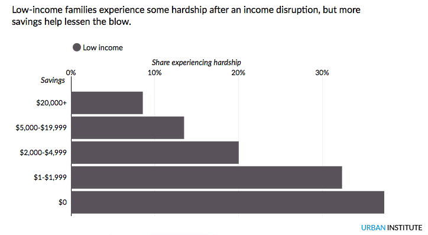
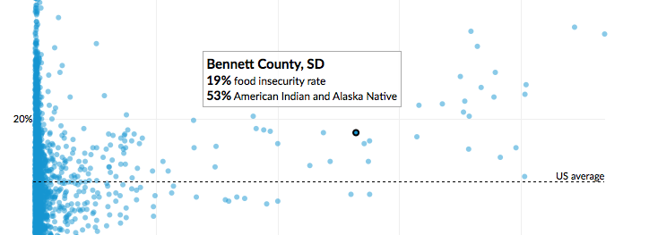
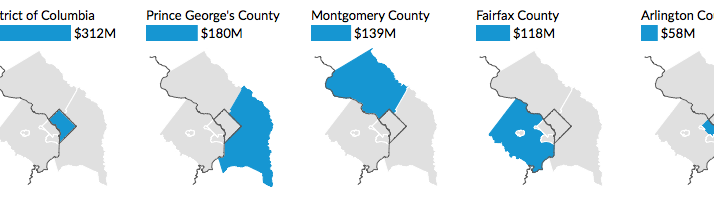
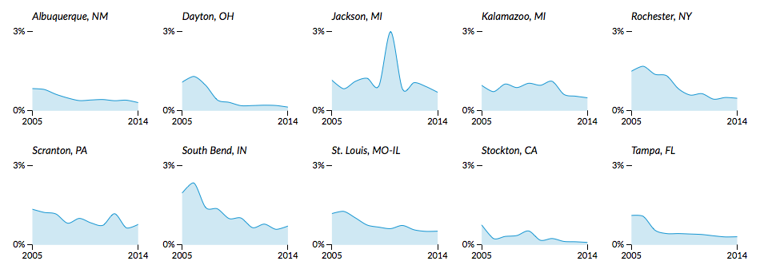
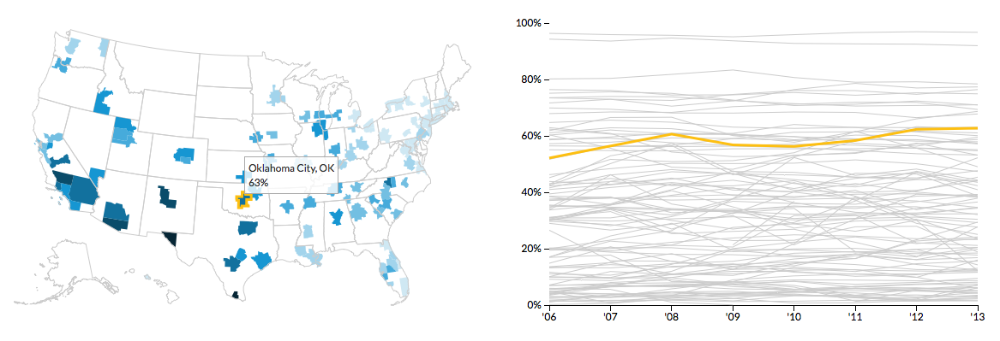
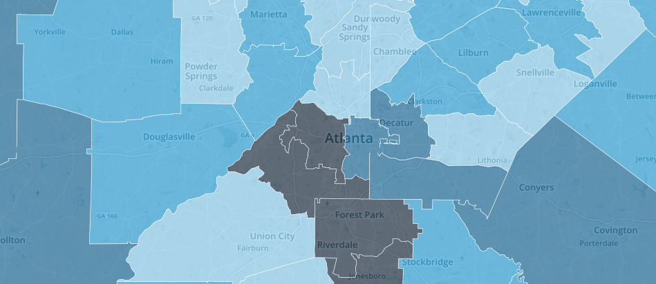
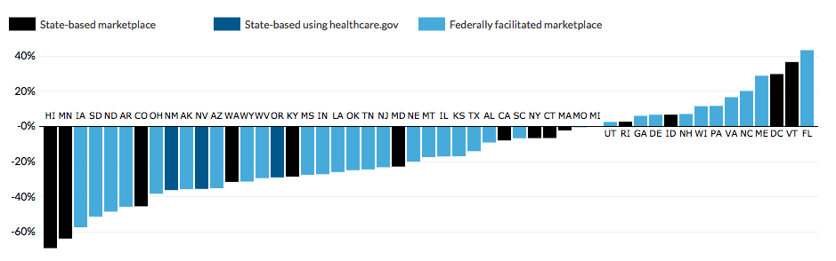

Hannah Recht Data Analyst and Visualizer
I am a data nerd passionate about communicating complex, important information through visuals and statistics. I work as a research associate and data visualization developer at the Urban Institute where I focus on data analysis and interactive visualization, for subjects ranging from income segregation to education affordability. My work has been featured in publications including the Washington Post, New York Times, and Washington City Paper.
Favorite tools include D3.js, R, and Mapbox. I'm writing an R package to make data retrieval from the Census APIs easier - interested in contributing? Please reach out or send a pull request. You can also find me at DataKind DC, where I'm working on a volunteer project with the American Red Cross. I ♥ open data and open code.
Previously, I worked in the Urban Institute's Health Policy Center on the Health Insurance Policy Simulation Model, simulating the effects of proposed policy changes including King v. Burwell, Medicaid expansion, and marketplace enrollment. Before that, I analyzed stroke treatment data at the University of Rochester Medical Center. I graduated from the University of Rochester with a bachelor's degree in mathematics and statistics, a minor in epidemiology, and a love of six month winters. When not doing all things data I play trumpet and watch any/all cooking competition shows.
Portfolio
Orphan Black clone tracker
America’s Gradebook: How Does Your State Stack Up?

Why Cities Should Care about Family Financial Security

Mapping food insecurity and distress in American Indian and Alaska Native communities

DC, Maryland, and Virginia: We need to talk about Metro

Where have all the small loans gone?

Visualizing Trends for Children of Immigrants

Our changing city: Public safety

Financing public higher education

Explaining uncertainty with poverty rates

Marketplaces makes significant progress in 2015

Mapping the assistance gap

Mapping the uninsured by race/ethnicity

Health marketplaces made significant progress in 2015. What will happen in 2016?

Publications
Matthew Buettgens, Stan Dorn, Hannah Recht. 2015. More than 10 Million Uninsured Could Obtain Marketplace Coverage through Special Enrollment Periods. Washington, DC: Urban Institute/Robert Wood Johnson Foundation.
Matthew Buettgens, John Holahan, Hannah Recht. 2015. Medicaid Expansion, Health Coverage, and Spending: An Update for the 21 States That Have Not Expanded Eligibility. Washington, DC: Urban Institute/Kaiser Family Foundation.
Matthew Buettgens, John Holahan, Linda Blumberg, Hannah Recht. 2015. Health Care Spending by Those Becoming Uninsured if the Supreme Court Finds for the Plaintiff in King v. Burwell Would Fall by at Least 35 Percent. Washington, DC: Urban Institute/Robert Wood Johnson Foundation.
Lisa Clemans-Cope, Matthew Buettgens, Hannah Recht. 2014. Racial/Ethnic Differences in Uninsurance Rates under the ACA. Washington, DC: Urban Institute.
Wakely Consulting Group and the Urban Institute. 2014. Oregon Basic Health Program Study. Report to the Oregon Health Authority. Washington, DC: Wakely Consulting Group and Urban Institute.
Matthew Buettgens, Genevieve Kenney, Hannah Recht. 2014. Eligibility for Assistance and Projected Changes in Coverage under the ACA: Variation Across States - May 2014 Update. Washington, DC: Urban Institute/Robert Wood Johnson Foundation.
Linda Blumberg, Genevieve Kenney, Matthew Buettgens, John Holahan, Nathaniel Anderson, Hannah Recht, Stephen Zuckerman. 2014. Measuring Marketplace Enrollment Relative to Enrollment Projections: Update. Washington, DC: Urban Institute/Robert Wood Johnson Foundation.
Linda Blumberg, Genevieve Kenney, Matthew Buettgens, John Holahan, Nathaniel Anderson, Hannah Recht, Stephen Zuckerman. 2014. Measuring Marketplace Enrollment Relative to Enrollment Projections. Washington, DC: Urban Institute/Robert Wood Johnson Foundation.
Matthew Buettgens, Genevieve Kenney, Hannah Recht, Victoria Lynch. 2013. Eligibility for Assistance and Projected Changes in Coverage under the ACA: Variation Across States. Washington, DC: Urban Institute/Robert Wood Johnson Foundation.
Resume
Experience
Urban Institute, Washington, DC
June 2013–Present
Research Associate II and Data Visualization Developer
University of Rochester Medical Center, Rochester, NY
July 2012–May 2013
Data Analyst - Stroke Treatment Alliance of Rochester
National Cancer Institute, Bethesda, MD
Summer 2011
Bioinformatics Intern
University of Rochester Music Department, Rochester, NY
December 2010–April 2013
Librarian - University of Rochester Symphony Orchestra
Education
University of Rochester, Rochester, NY
May 2013
Bachelor of Arts in Mathematics and Statistics, Minor in Epidemiology
Certificate in Actuarial Studies
National Merit Scholar